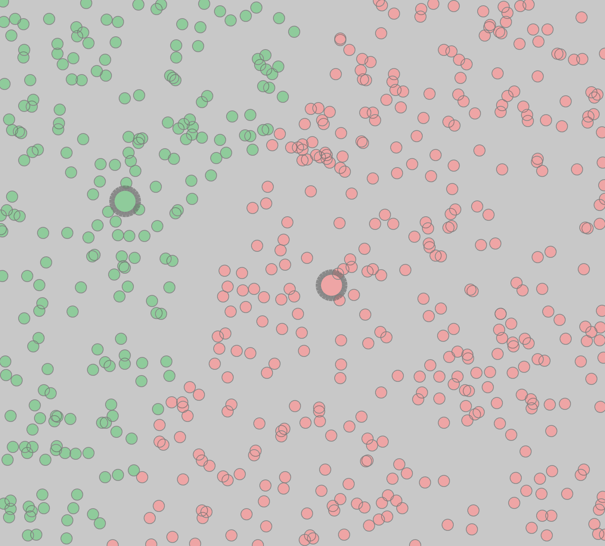
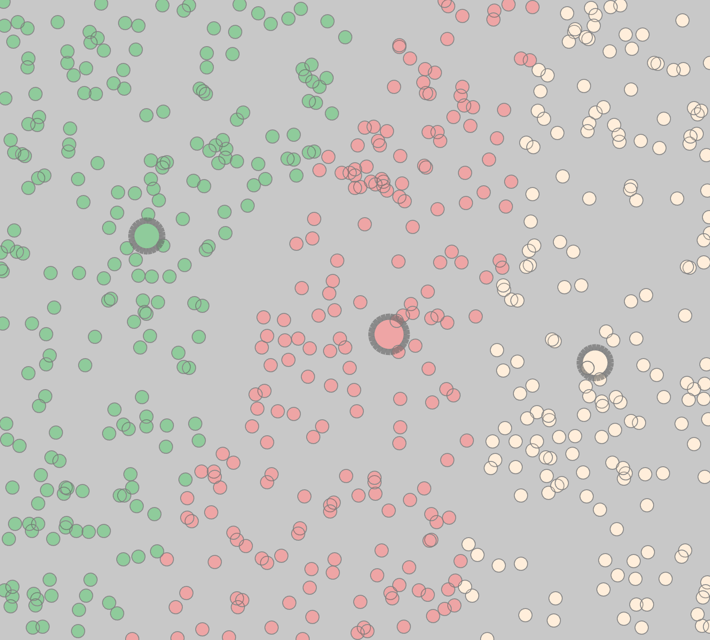
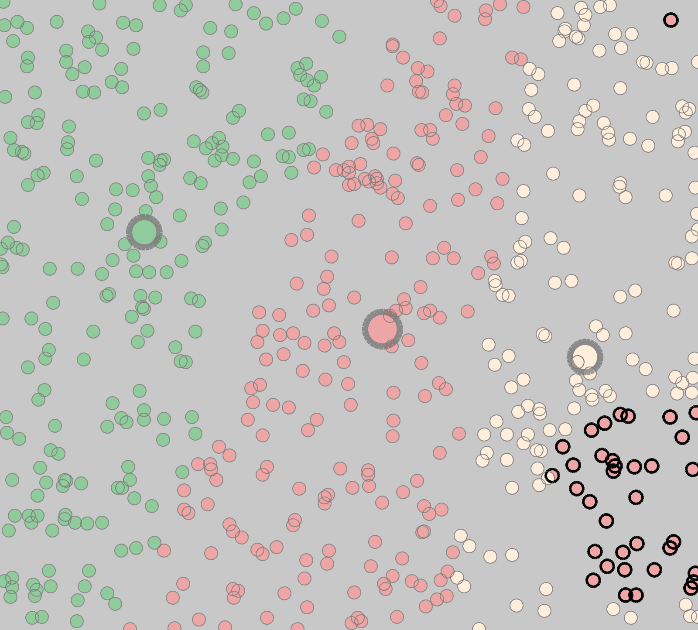

Plurality
So let's take a look at the most known, most used voting system inthe word: plurarity voting. The rules are simple: every voter votes for exactly one candidate. We will count the total number of votes of each candidate. The candidate with the most votes wins. Pretty straightforward, isn't it?
Let's start with the simple case: only two candidates, 600 voters. We will color the voters based on who's name did they put an x next to.

Voting results:
1st
● candidate#1|votes: 381
2nd
● candidate#0|votes: 219
In this case as you can see pink wins. Let's see what happens if we add another candidate:

Voting results:
1st
● candidate#0|votes: 219
2nd
● candidate#1|votes: 204
3rd
● candidate#2|votes: 177
Seems like the new candidate took the last place. Green still has as many votes as it has before. But look at pink's votecount. She only has 204 votes. So basicly this round, white joined the race, only to take last place, but the winner still changed. This doesn't make any sense. We clearly saw in the previous round, that more voters preferd pink over green.
If we look at the pictures more closely, we'll see, that white literarly stole votes from pink. Those voters would have preferd pink more, than green, so they are prety unsatisfied about the outcome. This is called the spoiler effect. But there is still a way for pink to win. If among the white voters there are some strategic voters (indicated by larger strokeweight) then tey will vote for pink instead of white to prevent green from winning. Let's see this in action!

Voting results:
1st
● candidate#1|votes: 240
2nd
● candidate#0|votes: 219
3rd
● candidate#2|votes: 141
As you can see here, the strategic voters recognized that white has a pretty low chance of winning. So they voted for pink instead to help her win. And in the end, they succeded. So if voters know the chances of each candidate they can make decisions to prevent an undesirable outcome. But for this, they roughly need to know each candidates' chances. If they don't know or even worse, they've got a misinformation, than obiusly this is not going to work.
I wonder why plurarity voting in most cases leads to two party sytems.
Plurality voting is an electoral system in which a candidate, or candidates, who poll more than any other counterpart (that is, receive a plurality), are elected. Sometimes, it is called first-past-the-post (FPTP) voting. This system is widely used, for example, in the United States.